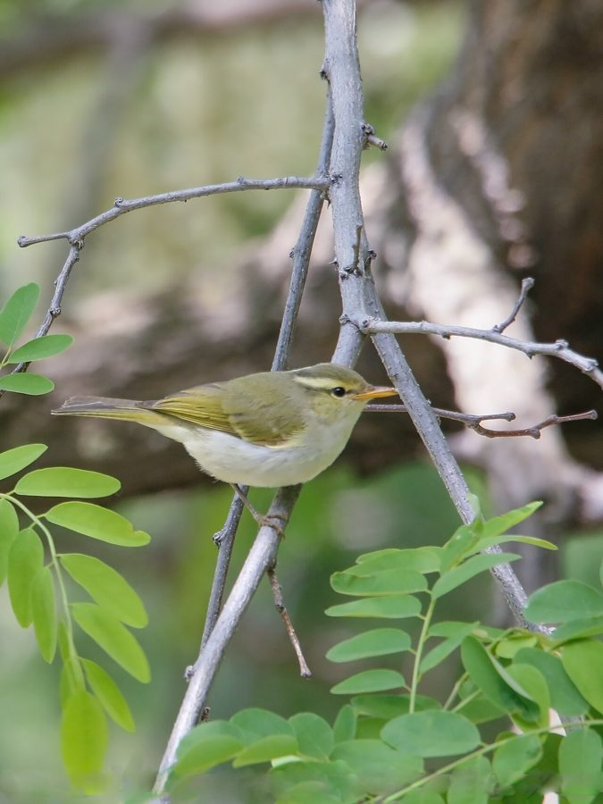

वेस्टर्न क्राउन्ड वार्बलरWestern Crowned Warbler
Phylloscopus occipitalis · Phylloscopidae · BRD-0307

- Scientific name वैज्ञानिक नाम
- Phylloscopus occipitalis (Blyth, 1845)
- Family कुल
- Phylloscopidae
- Hindi हिंदी
- वेस्टर्न क्राउन्ड वार्बलर
- Local names स्थानीय नाम
- western crowned warbler
- Status here यहाँ की स्थिति
- native
- Movement आवागमन
- Passage migrant
- Known from कहाँ दर्ज
- Others have published records from the Basti–Ayodhya districts बस्ती–अयोध्या के ज़िलों से दूसरों के प्रकाशित अभिलेख
- IUCN IUCN
- LC
- Review समीक्षा
- not yet reviewed
When to look कब देखें
Passage migrant मार्ग प्रवासी. Expected mainly in August, September, October, March, April. मुख्यतः अगस्त, सितंबर, अक्टूबर, मार्च, अप्रैल में अपेक्षित।
Breeds in the western Himalayas and Central Asian coniferous and mixed forests; traverses the Gangetic plains and deciduous belts on autumn (August to October) and spring (March to April) passage towards main wintering grounds in the Western Ghats and southern India. All migrants and visitors →
Tell it apart from इनसे अलग पहचानें
वेस्टर्न क्राउन्ड वार्बलर / Western Crowned Warbler
Phylloscopus occipitalis (Blyth, 1845) — Phylloscopidae
वेस्टर्न क्राउन्ड वार्बलर — पश्चिमी हिमालय के देवदार और बांज के जंगलों से प्रवास के दौरान गंगा के मैदानी इलाकों से होकर गुजरने वाली एक चंचल और छोटी फुदकी है। यह अगस्त से अक्टूबर के बीच दक्षिण भारत की ओर जाते समय और मार्च-अप्रैल में वापस लौटते समय पुराने बाग-बगीचों, आम की अमराइयों और सड़क किनारे के घने पेड़ों के ऊपरी छतरियों में दिखाई देती है। इसके सिर के बीचों-बीच एक हल्की पीली धारी और आंखों के ऊपर स्पष्ट भौंह होती है। यह पेड़ों की पत्तियों से छोटे कीड़े-मकोड़े खाकर वनों की रक्षा करती है।
Quick Identification त्वरित पहचान
| Feature | Description |
|---|---|
| Habit | Active, canopy-haunting leaf-warbler of mature tree crowns |
| Plumage | Bright greyish olive-green above, clean whitish below with faint yellow wash |
| Crown | Distinct pale yellowish-white median crown stripe bordered by dusky bands |
| Supercilium | Long, prominent yellowish-white eyebrow reaching well past eye |
| Wings | Two whitish wing-bars, the greater prominent and the median narrow |
| Bill | Relatively long, stout, pale yellowish-orange on lower mandible |
| Foraging | Restless foliage gleaning and flycatching in middle and upper canopy |
Field tip: Look high up in the crowns of mature shade trees during autumn migration. The distinct crown-stripe, double wing-bars, long pale supercilium, and habit of making aerial sallies distinguish it from commoner leaf-warblers.
हिंदी:
यह पुराने आम के बागों और बड़े पेड़ों के सबसे ऊपरी हिस्सों में फुदकती हुई नजर आती है।
सिर के ठीक बीच में एक हल्की पीली पट्टी और पंखों पर दो सफेद धारियां इसकी मुख्य पहचान हैं।
यह पत्तियों के बीच तेजी से उड़कर छोटे पतंगे और मक्खियां पकड़ती है।
Morphology आकारिकी
Measurements as given by Baker (1924 as Acanthopneuste occipitalis):
| Measurement | Range |
|---|---|
| Wing | 58–89 mm (Baker 1924) |
The Western Crowned Warbler is a moderately large, robust leaf-warbler characterized by an intricate head pattern. The upper plumage is bright greyish olive-green, clearest on the rump and upper tail-coverts. The head exhibits a prominent, pale yellowish-buff or whitish median crown-stripe running from the mid-crown to the nape, flanked by darker olive-brown lateral crown stripes.
A long, whitish-yellow supercilium extends from the bill base over the eye to the sides of the nape, accentuated by a dark olive eye-stripe. The underparts are predominantly greyish-white, with faint yellowish streaks on the belly and undertail coverts.
The bill is relatively long and strong for a Phylloscopus, with a dark brown culmen and bright pale yellowish-orange lower mandible. The iris is dark hazel-brown. The legs and feet are pale slaty-grey or brownish-flesh. Sexes appear identical in plumage.
Vocalisations. The flight and contact note is a characteristic high-pitched, metallic, disyllabic chirp transcribed as chi-wee or twit-chee. The song, delivered primarily on breeding grounds, is a vigorous rolling trill.
हिंदी:
इसकी चोंच का निचला हिस्सा नारंगी-पीला और पैर सलेटी रंग के होते हैं।
सिर पर गहरी धारियों के बीच में एक हल्की पीली रेखा इसे अन्य फुदकियों से अलग बनाती है।
यह पेड़ों के ऊपर से 'ची-वी' जैसी तेज धातुई सीटी जैसी आवाज निकालती है।
Behaviour & Ecology व्यवहार और पारिस्थितिकी
Phylloscopus occipitalis is largely arboreal and strictly insectivorous during passage through northern India. It inhabits the upper and middle canopies of tall broadleaved trees, where it moves briskly along outer branches and leaf clusters. It frequently joins mixed-species foraging flocks that include tits, white-eyes, and fantails.
Its foraging behavior includes active gleaning from the undersurfaces of leaves, flutter-chasing insects disturbed from foliage, and making short acrobatic sallies into the air to snap up flying prey. Unlike ground-dwelling warblers, it rarely descends to shrubs or undergrowth unless heavy wind or rain forces it downward.
हिंदी:
यह जमीन पर कभी नहीं उतरती और हमेशा बड़े पेड़ों की घनी फुनगियों में ही रहती है।
यह अक्सर अन्य छोटी चिड़ियों जैसे शकरखोरा और सफेद-आंख के साथ मिलकर झुंड में शिकार करती है।
Life Cycle / Phenology जीवन चक्र
Baker (1924, p. 480) records that Acanthopneuste occipitalis occipitalis breeds during May and June between 6,500 and 9,000 feet from the North-West Frontier to Nepal, nesting in holes in banks, walls, or trees. In winter it spreads across the plains and peninsular India, occurring in well-wooded tracts during cold-season passage.
हिंदी:
बेकर (1924) के अनुसार यह मई और जून में 6,500 से 9,000 फीट की ऊंचाई पर हिमालयी क्षेत्रों में पेड़ों या दीवारों के छेदों में घोंसला बनाकर अंडे देती है। सर्दियों में यह प्रवास करके उत्तर भारत के मैदानी और प्रायद्वीपीय वनों में आती है।
Host Plants or Prey आहार
The Western Crowned Warbler feeds on small arboreal invertebrates obtained by foliage gleaning:
- Small beetles and weevils found on tree bark
- Aphids, scale insects, and psyllids infesting leaf shoots
- Small caterpillars and moth larvae
- Spiders inhabiting tree crowns
- Flying midges and gnats caught in short sallies
It methodically inspects tree foliage and outer branch tips in tall trees.
हिंदी:
यह पेड़ों की पत्तियों और टहनियों से छोटे कीड़े, इल्लियां, माहू और मकड़ियां चुनकर खाती है।
Predators / Natural Enemies शत्रु
Hawks, owls, and small carnivores take birds of this size. No source opened for this atlas names a specific predator of this species.
हिंदी:
बाज, उल्लू और छोटे मांसाहारी जानवर इस आकार के पक्षियों का शिकार करते हैं। इस एटलस के लिए देखे गए किसी स्रोत में इसके किसी विशिष्ट शिकारी का नाम दर्ज नहीं है।
Agricultural / Human Relevance कृषि प्रासंगिकता
The Western Crowned Warbler is an arboreal insectivore, gleaning small insects, caterpillars, and spiders from tree foliage. It is protected under the Wildlife (Protection) Act, 1972.
हिंदी:
वेस्टर्न क्राउन्ड वार्बलर पेड़ों पर रहने वाला कीटभक्षी पक्षी है, जो पत्तियों से छोटे कीड़ों, सुंडियों और मकड़ियों को चुनकर खाता है। यह वन्यजीव (संरक्षण) अधिनियम, 1972 के तहत संरक्षित है।
Expected Locally स्थानीय रूप से अपेक्षित
Not a field record. Written from published accounts for eastern Uttar Pradesh. No confirmed local sighting yet — if you have seen it, that is what the atlas needs.
अभी तक स्थानीय पुष्टि नहीं। यह विवरण प्रकाशित स्रोतों से है, किसी अवलोकन से नहीं।
Look high in the canopy of old mango orchards, shaded neem and sheesham groves, and roadside tree belts during post-monsoon passage from August to October and again on return passage in March and April.
GBIF holds published records from these districts.
A first record would be a photograph of the bird with place and date, sent through the About page.
Distribution वितरण
Global range: Breeds in Central Asia and the western Himalayas, from eastern Uzbekistan, Kyrgyzstan, Tajikistan, and Afghanistan through northern Pakistan and northern India to western Nepal. Winters primarily in the Western Ghats and hills of southern India.
Regional status: Regular passage migrant across Uttar Pradesh during autumn (August to October) and spring (March to April), halting temporarily in mature canopies.
हिंदी:
यह मध्य एशिया और पश्चिमी हिमालय में प्रजनन करती है और सर्दियों में प्रायद्वीपीय भारत व पश्चिमी घाट में रहती है।
Research Questions शोध प्रश्न
- What stopover duration does Phylloscopus occipitalis maintain in Gangetic mango orchards during autumn versus spring passage? / पतझड़ और वसंत के दौरान यह चिड़िया अवध के बागों में कितने दिनों तक पड़ाव डालती है?
- Which canopy tree species provide the highest invertebrate densities for transient leaf-warblers in peri-urban woodland patches?
- How do intensive pesticide sprays in commercial mango belts affect foraging passage migrants? / आम के बागों में कीटनाशक छिड़काव से प्रवास कर रहे इन पक्षियों के भोजन पर क्या असर पड़ता है?
- What proportion of migratory leaf-warbler flocks during September in eastern UP consists of P. occipitalis relative to P. trochiloides?
- Can canopy-directed sound recording units detect the disyllabic flight calls of passing warblers above urban tree cover? (A smartphone recording uploaded by a local student can verify passage timing.)
Similar Species मिलती-जुलती प्रजातियाँ
| Species | How to tell apart | हिंदी | |
|---|---|---|---|
| [[greenish_warbler\ | Greenish Warbler]] (Phylloscopus trochiloides) | Lacks distinct pale median crown stripe; has only a single prominent wingbar (rarely faint second); call a sharper tiss-yip | हरा वार्बलर |
| [[humes_leaf_warbler\ | Hume's Leaf Warbler]] (Phylloscopus humei) | Smaller body size, duller grey-olive upperparts, dark bill and legs, buff-tinged supercilium and double wingbars | ह्यूम का वार्बलर |
Field rule: The distinct pale yellowish median crown stripe, combined with double wingbars and bright olive upperparts, separates the Western Crowned Warbler from both Greenish and Hume's Leaf Warblers.
हिंदी:
हरे वार्बलर के सिर पर बीच की धारी नहीं होती और केवल एक पंख-पट्टी होती है; ह्यूम का वार्बलर आकार में छोटा और गहरे मटमैले रंग का होता है।
Taxonomy & Classification वर्गीकरण
Original description. Described by Edward Blyth in 1845 in the Journal of the Asiatic Society of Bengal (vol. 14, part 2, p. 598), under the basionym "Phyllopneuste occipitalis". The type locality is southern India (collected by T. C. Jerdon). Formerly placed in the genus Acanthopneuste (treated as "Acanthopneuste occipitalis" by Baker 1924).
Subspecies. Monotypic; no subspecies are currently recognized across its breeding range.
Family and order placement. Order Passeriformes; family Phylloscopidae (leaf-warblers).
Phylogenetic notes. Phylloscopus occipitalis forms a superspecies complex with the Eastern Crowned Warbler (Phylloscopus coronatus), representing an adapted radiation of canopy-dwelling, crown-striped leaf-warblers.
IUCN status rationale. Evaluated as Least Concern (LC) by the IUCN Red List due to its extensive geographical distribution, absence of rapid declines, and large breeding populations across montane forests.
हिंदी:
एडवर्ड ब्लाइथ ने 1845 में इसका विवरण प्रकाशित किया था। यह फिलोस्कोपिडे कुल की सदस्य है और वैश्विक स्तर पर सुरक्षित है।
Photo Gallery फोटो गैलरी
No photos yet — add field photos to media/species/western_crowned_warbler/ and run node scripts/sync_photos.js.
Photos needed आवश्यक फोटो
- [ ] Adult foraging high in mango canopy (आम के पेड़ पर वयस्क)
- [ ] Dorsal view showing median crown stripe and double wingbars (सिर की धारी और पंखों का दृश्य)
References संदर्भ
- Blyth, E. (1845). Notices and descriptions of various new or little known species of birds. Journal of the Asiatic Society of Bengal, vol. 14, part 2, p. 598 (as "Phyllopneuste occipitalis").
- Baker, E. C. S. (1924). The Fauna of British India, Including Ceylon and Burma. Birds. Vol. 2. Taylor & Francis, London, p. 479 (as Acanthopneuste occipitalis).
- Ali, S. & Ripley, S. D. (1987). Compact Handbook of the Birds of India and Pakistan. Oxford University Press, New Delhi.
- Grimmett, R., Inskipp, C. & Inskipp, T. (2011). Birds of the Indian Subcontinent. 2nd ed. Christopher Helm, London.
- BirdLife International (2024). Phylloscopus occipitalis. The IUCN Red List of Threatened Species 2024: e.T22715344A264426541.
- GBIF Occurrence Data — Phylloscopus occipitalis (Blyth, 1845), India (2025).
Source file: species/fauna/birds/western_crowned_warbler.md